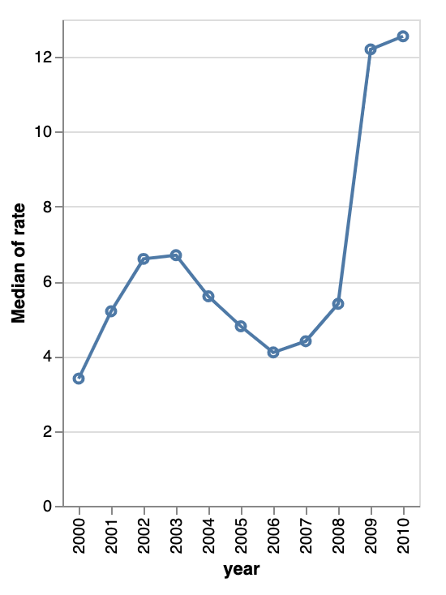

Lecture 8: August 23nd, 2023#
Check-in Question: Happy Wednesday! Would you rather be able to fly at 10mph, or run at 100mph?
Updates and Reminders:
Homework 3 and Homework 4 due tonight at midnight.
Homework 5 and Homework 6 will be posted tonight. They are due Wednesday, Week 4 at midnight.
Extra attempts should have been added for last week’s outcome quizzes. If you did not get credit for an outcome quiz last week, you have 2 extra attempts this week. Let me know if these attempts are not showing up.
I am still working on getting new outcome quizzes up. I’ll make an announcement when they are live.
Today:
Last EDA lecture! We’ll go through some important python concepts (f-strings, lambda functions, list comprehension). This is part of what’s called pythonic code.
Overall Question#
From 2002 to 2008, how did the unemployment rate change across different industries?
For each of 14 industries, we will write one sentence briefly addressing this question.
Preparing the Data#
Load the attached unemployment.csv file as a pandas DataFrame
df.Convert the “date” column to a datetime dtype, by using
pd.to_datetime. (Make sure you’ve actually replaced the “date” column, as opposed to displaying a new Series and leavingdfthe same.)Add a “year” column to
dfusing thedtaccessor.
import pandas as pd
df = pd.read_csv("unemployment.csv")
---------------------------------------------------------------------------
FileNotFoundError Traceback (most recent call last)
Input In [2], in <cell line: 1>()
----> 1 df = pd.read_csv("unemployment.csv")
File ~/opt/miniconda3/envs/math9/lib/python3.9/site-packages/pandas/util/_decorators.py:311, in deprecate_nonkeyword_arguments.<locals>.decorate.<locals>.wrapper(*args, **kwargs)
305 if len(args) > num_allow_args:
306 warnings.warn(
307 msg.format(arguments=arguments),
308 FutureWarning,
309 stacklevel=stacklevel,
310 )
--> 311 return func(*args, **kwargs)
File ~/opt/miniconda3/envs/math9/lib/python3.9/site-packages/pandas/io/parsers/readers.py:678, in read_csv(filepath_or_buffer, sep, delimiter, header, names, index_col, usecols, squeeze, prefix, mangle_dupe_cols, dtype, engine, converters, true_values, false_values, skipinitialspace, skiprows, skipfooter, nrows, na_values, keep_default_na, na_filter, verbose, skip_blank_lines, parse_dates, infer_datetime_format, keep_date_col, date_parser, dayfirst, cache_dates, iterator, chunksize, compression, thousands, decimal, lineterminator, quotechar, quoting, doublequote, escapechar, comment, encoding, encoding_errors, dialect, error_bad_lines, warn_bad_lines, on_bad_lines, delim_whitespace, low_memory, memory_map, float_precision, storage_options)
663 kwds_defaults = _refine_defaults_read(
664 dialect,
665 delimiter,
(...)
674 defaults={"delimiter": ","},
675 )
676 kwds.update(kwds_defaults)
--> 678 return _read(filepath_or_buffer, kwds)
File ~/opt/miniconda3/envs/math9/lib/python3.9/site-packages/pandas/io/parsers/readers.py:575, in _read(filepath_or_buffer, kwds)
572 _validate_names(kwds.get("names", None))
574 # Create the parser.
--> 575 parser = TextFileReader(filepath_or_buffer, **kwds)
577 if chunksize or iterator:
578 return parser
File ~/opt/miniconda3/envs/math9/lib/python3.9/site-packages/pandas/io/parsers/readers.py:932, in TextFileReader.__init__(self, f, engine, **kwds)
929 self.options["has_index_names"] = kwds["has_index_names"]
931 self.handles: IOHandles | None = None
--> 932 self._engine = self._make_engine(f, self.engine)
File ~/opt/miniconda3/envs/math9/lib/python3.9/site-packages/pandas/io/parsers/readers.py:1216, in TextFileReader._make_engine(self, f, engine)
1212 mode = "rb"
1213 # error: No overload variant of "get_handle" matches argument types
1214 # "Union[str, PathLike[str], ReadCsvBuffer[bytes], ReadCsvBuffer[str]]"
1215 # , "str", "bool", "Any", "Any", "Any", "Any", "Any"
-> 1216 self.handles = get_handle( # type: ignore[call-overload]
1217 f,
1218 mode,
1219 encoding=self.options.get("encoding", None),
1220 compression=self.options.get("compression", None),
1221 memory_map=self.options.get("memory_map", False),
1222 is_text=is_text,
1223 errors=self.options.get("encoding_errors", "strict"),
1224 storage_options=self.options.get("storage_options", None),
1225 )
1226 assert self.handles is not None
1227 f = self.handles.handle
File ~/opt/miniconda3/envs/math9/lib/python3.9/site-packages/pandas/io/common.py:786, in get_handle(path_or_buf, mode, encoding, compression, memory_map, is_text, errors, storage_options)
781 elif isinstance(handle, str):
782 # Check whether the filename is to be opened in binary mode.
783 # Binary mode does not support 'encoding' and 'newline'.
784 if ioargs.encoding and "b" not in ioargs.mode:
785 # Encoding
--> 786 handle = open(
787 handle,
788 ioargs.mode,
789 encoding=ioargs.encoding,
790 errors=errors,
791 newline="",
792 )
793 else:
794 # Binary mode
795 handle = open(handle, ioargs.mode)
FileNotFoundError: [Errno 2] No such file or directory: 'unemployment.csv'
df.shape
---------------------------------------------------------------------------
NameError Traceback (most recent call last)
Input In [3], in <cell line: 1>()
----> 1 df.shape
NameError: name 'df' is not defined
df.sample(5)
---------------------------------------------------------------------------
NameError Traceback (most recent call last)
Input In [4], in <cell line: 1>()
----> 1 df.sample(5)
NameError: name 'df' is not defined
df["industry"].unique()
---------------------------------------------------------------------------
NameError Traceback (most recent call last)
Input In [5], in <cell line: 1>()
----> 1 df["industry"].unique()
NameError: name 'df' is not defined
len(df["industry"].unique())
---------------------------------------------------------------------------
NameError Traceback (most recent call last)
Input In [6], in <cell line: 1>()
----> 1 len(df["industry"].unique())
NameError: name 'df' is not defined
Let’s convert the date column to a datetime dtype.
#have I actually changed the column?
#no!
pd.to_datetime(df["date"])
---------------------------------------------------------------------------
NameError Traceback (most recent call last)
Input In [7], in <cell line: 3>()
1 #have I actually changed the column?
2 #no!
----> 3 pd.to_datetime(df["date"])
NameError: name 'df' is not defined
df["date"] = pd.to_datetime(df["date"])
df
---------------------------------------------------------------------------
NameError Traceback (most recent call last)
Input In [8], in <cell line: 1>()
----> 1 df["date"] = pd.to_datetime(df["date"])
2 df
NameError: name 'df' is not defined
Now, let’s add a “year” column
df["year"] = df["date"].dt.year
---------------------------------------------------------------------------
NameError Traceback (most recent call last)
Input In [9], in <cell line: 1>()
----> 1 df["year"] = df["date"].dt.year
NameError: name 'df' is not defined
df
---------------------------------------------------------------------------
NameError Traceback (most recent call last)
Input In [10], in <cell line: 1>()
----> 1 df
NameError: name 'df' is not defined
Using df.groupby and a for-loop#
Overview of our setup: We’ll first go through the problem statement and talk about what the problem is asking for. We’ll then break the problem into smaller pieces and better under df.groupby objects before formally writing out a solution.
GroupBy objects can be pretty mysterious. The point of these problems is to get more comfortable with them.
(There are other solutions possible, but the point of this lecture is to practice iterating over a pandas GroupBy object.)
There are 14 total industries in the dataset. Here are two examples of the sentences we want to produce. Notice how in one of the sentences we use the word “increased” and in the other sentence we use the word “decreased”. Notice also that each of our numbers shows two decimal places.
From 2002 to 2008, the median unemployment rate in Leisure and hospitality increased by 2.94%, from 8.50 to 8.75.
From 2002 to 2008, the median unemployment rate in Manufacturing decreased by 18.18%, from 6.60 to 5.40.
Take a minute to understand these computations. For example, do you see why we are saying 8.50 to 8.75 is an increase of 2.94%?
Note: I’m not worried about the sign of this number. We’ll take care of it when we code the solution to the problem. Formula for percent change: $\( \frac{x_{\text{new}}-x_{\text{old}}}{x_{\text{old}}} \times 100 \)$
Let’s do a sanity check computation:
((8.75-8.5)/8.5)*100
2.941176470588235
For each of the 14 industries, append the corresponding sentence to
text_list. Use the following template.
Before we solve this problem, we’ll go over a few related concepts.
Note for those reading this after the lecture. We built this code slowly after trying the examples below.
Make sure you understand the logic of this skeleton, even if you don’t understand all the individual parts yet.
text_list = []
for ???, ??? in df.groupby(???):
??? (as many lines as you need)
change = ??? if ??? else ??? # "increased" or "decreased" as appropriate
sentence = f'''From {years[0]} to {years[1]}, the median unemployment rate in {???} {change} by {???:.2%}, from {???:.2f} to {???:.2f}.'''
text_list.append(sentence)
What we solved after the df.groupby practice#
What do you think we should organized our data based on? The chat has answered: For this problem, it makes sense for us to sort by “industry”.
Notes from building this code together:
In the tuple unpacking below, the first variable gives industry, and the second variable gives the sub-DataFrame corresponding to that industry.
How will I know if the median unemployment rate increased or decreased? If
median_2002 < median_2008, then we can say that the rate increased.
years = [2002,2008]
text_list = []
for ind_name,sub_df in df.groupby("industry"):
#let's get the median unemployment rate for these two years
median_2002 = sub_df[sub_df["year"] == years[0]]["rate"].median()
median_2008 = sub_df[sub_df["year"] == years[1]]["rate"].median()
change = "increased" if median_2002 < median_2008 else "decreased" # "increased" or "decreased" as appropriate
#I know that no values stayed fixed in this data, so let's not worry about if the rate is equal
---------------------------------------------------------------------------
NameError Traceback (most recent call last)
Input In [12], in <cell line: 3>()
1 years = [2002,2008]
2 text_list = []
----> 3 for ind_name,sub_df in df.groupby("industry"):
4 #let's get the median unemployment rate for these two years
5 median_2002 = sub_df[sub_df["year"] == years[0]]["rate"].median()
6 median_2008 = sub_df[sub_df["year"] == years[1]]["rate"].median()
NameError: name 'df' is not defined
What we solved after the f-strings practice#
years = [2002,2008]
text_list = []
for ind_name,sub_df in df.groupby("industry"):
#let's get the median unemployment rate for these two years
median_2002 = sub_df[sub_df["year"] == years[0]]["rate"].median()
median_2008 = sub_df[sub_df["year"] == years[1]]["rate"].median()
change = "increased" if median_2002 < median_2008 else "decreased" # "increased" or "decreased" as appropriate
#I know that no values stayed fixed in this data, so let's not worry about if the rate is equal
sentence = f'''From {years[0]} to {years[1]}, the median unemployment rate in {ind_name} {change} by {abs((median_2008-median_2002)/(median_2002)):.2%}, from {median_2002:.2f} to {median_2008:.2f}.'''
text_list.append(sentence)
---------------------------------------------------------------------------
NameError Traceback (most recent call last)
Input In [13], in <cell line: 3>()
1 years = [2002,2008]
2 text_list = []
----> 3 for ind_name,sub_df in df.groupby("industry"):
4 #let's get the median unemployment rate for these two years
5 median_2002 = sub_df[sub_df["year"] == years[0]]["rate"].median()
6 median_2008 = sub_df[sub_df["year"] == years[1]]["rate"].median()
NameError: name 'df' is not defined
text_list
[]
Itearting through df.groupby objects#
We’ve seen examples of calling methods on GroupBy objects, but how could we iterate through a GroupBy object? What does it even look like?
Recall, we’ve seen
df.groupbywith thempgdataset. Here’s a quick refresher of how we used it.
import seaborn as sns
mpg = sns.load_dataset("mpg")
mpg.groupby("origin").median()
| mpg | cylinders | displacement | horsepower | weight | acceleration | model_year | |
|---|---|---|---|---|---|---|---|
| origin | |||||||
| europe | 26.5 | 4.0 | 104.5 | 76.5 | 2240.0 | 15.7 | 76.0 |
| japan | 31.6 | 4.0 | 97.0 | 75.0 | 2155.0 | 16.4 | 78.0 |
| usa | 18.5 | 6.0 | 250.0 | 105.0 | 3365.0 | 15.0 | 76.0 |
Maybe you feel that GroupBy is a little mysterious? We’ve seen examples of calling methods on this object, but what does the object itself actually look like?
For example, if we think of
listobjects, we know the general shape of a list. Similar for things like dictionaries, tuples, sets, etc.
mpg.groupby("origin")
<pandas.core.groupby.generic.DataFrameGroupBy object at 0x7f81dd833130>
Let’s start by looking at an example taken from this link. This is good advice for math in general: we’re going to start with a much easier example before we use our ideas to solve the more complicated problem.
my_dict = {'X': ['A', 'B', 'A', 'B'],
'Y': [1, 4, 3, 2]}
my_dict
{'X': ['A', 'B', 'A', 'B'], 'Y': [1, 4, 3, 2]}
Convert
my_dictto a pandas DataFrame by using the pandas functionDataFrame. Call the resultdf.
df = pd.DataFrame(my_dict)
df
| X | Y | |
|---|---|---|
| 0 | A | 1 |
| 1 | B | 4 |
| 2 | A | 3 |
| 3 | B | 2 |
Use
groupbyto groupdfby “X”. Call the resultdf_groups.
df_groups = df.groupby("X")
df_groups
<pandas.core.groupby.generic.DataFrameGroupBy object at 0x7f81dc794c10>
Iterate through
df_groupsusing a for-loop. For each iteration, print the following to get a feel for what the objects look like:The data type of the returned object
The length of each object
The 0th element of each object, the 1st element of each object, etc.
name of the group along with the sub-DataFrame belonging to that group. Can you predict how many times we will go through the for-loop, based on our sample data?
for unknown in df_groups:
print(type(unknown))
<class 'tuple'>
<class 'tuple'>
Maybe this is strange? If we iterate through df_groups, we see that the objects are tuples. The next natural question to ask is how long is each tuple?
for tup in df_groups:
print(len(tup))
2
2
Now we know that each tuple is length 2. Maybe now we want to ask what is each element?
#print the 0th element of each tuple
for tup in df_groups:
print(tup[0])
print(type(tup[0]))
A
<class 'str'>
B
<class 'str'>
Big Reminder: We’re grouping df by “X”, so we sort based on what values appear in the “X” column.
df
| X | Y | |
|---|---|---|
| 0 | A | 1 |
| 1 | B | 4 |
| 2 | A | 3 |
| 3 | B | 2 |
#print the 1st element of each tuple
for tup in df_groups:
print(tup[1])
print(type(tup[1]))
X Y
0 A 1
2 A 3
<class 'pandas.core.frame.DataFrame'>
X Y
1 B 4
3 B 2
<class 'pandas.core.frame.DataFrame'>
#example of tuple unpacking
#split the tuple into two variables
for group_name,sub_data in df_groups:
print("The name of the group is: {group_name}")
print(sub_data)
The name of the group is: {group_name}
X Y
0 A 1
2 A 3
The name of the group is: {group_name}
X Y
1 B 4
3 B 2
#example of tuple unpacking
#split the tuple into two variables
#we also use f-strings to format
for group_name,sub_data in df_groups:
print(f"The name of the group is: {group_name}")
print(sub_data)
The name of the group is: A
X Y
0 A 1
2 A 3
The name of the group is: B
X Y
1 B 4
3 B 2
df
| X | Y | |
|---|---|---|
| 0 | A | 1 |
| 1 | B | 4 |
| 2 | A | 3 |
| 3 | B | 2 |
Observations:
Recall df_groups sorts the data by “X” values. When we iterate through df_groups, we get tuples where the 0th entry represents a value of “X”, and the 1st entry represent the sub-DataFrame of df where all the “X” values are equal to what’s in position 0.
f-strings#
Before we try the above problem, let’s see some examples with f-strings and string formatting.
f-strings stands for “format”-strings, and gives us a nice way of passing variables to strings. These are relatively new to Python, and all new code should use them over the older methods. However, if you’re reading older code, you might see strings formatted in a different way.
See this link for f-string formatting options.
Import NumPy and instantiate a random number generator object.
import numpy as np
rng = np.random.default_rng()
Make a length 100 NumPy array of random real numbers between 0 and 1. Call it
arr. Iterate through this array by usingn,x in enumerate(arr)
Random real number n of 100: x
Let’s see a quick example with enumerate, just to get an idea of what’s going on.
mylist = ["Math","10","is","fun"]
tuple(enumerate(mylist))
((0, 'Math'), (1, '10'), (2, 'is'), (3, 'fun'))
arr = rng.random(100)
arr
array([0.81532201, 0.386659 , 0.94335892, 0.0014583 , 0.37878242,
0.87430966, 0.0437262 , 0.43477765, 0.72628096, 0.3530233 ,
0.74081623, 0.56072912, 0.78661773, 0.10796011, 0.72094658,
0.73280309, 0.955358 , 0.64288713, 0.31024468, 0.95914092,
0.99657931, 0.29307631, 0.64121632, 0.9857564 , 0.69862877,
0.43528091, 0.90265884, 0.37789246, 0.7465335 , 0.27899519,
0.83965801, 0.08440966, 0.40933101, 0.28605933, 0.57797218,
0.15832449, 0.95406446, 0.99623628, 0.03133758, 0.82028422,
0.78760869, 0.33128284, 0.05894173, 0.07692773, 0.93652703,
0.98058991, 0.82189778, 0.47228601, 0.93000007, 0.3828831 ,
0.81319833, 0.6606942 , 0.9132422 , 0.55959868, 0.13179992,
0.88199194, 0.60235116, 0.22770092, 0.91185366, 0.24974375,
0.98820405, 0.24931547, 0.92328773, 0.10987644, 0.19660285,
0.32286361, 0.80581451, 0.28237341, 0.16824177, 0.61347683,
0.32061153, 0.93119146, 0.66920032, 0.86846678, 0.02588566,
0.23627745, 0.08085357, 0.21425023, 0.04877948, 0.93829239,
0.26148024, 0.82892941, 0.27437521, 0.0261777 , 0.55917756,
0.58253685, 0.02410165, 0.24086085, 0.33647475, 0.34775624,
0.60364538, 0.0154489 , 0.12953442, 0.2063858 , 0.87284347,
0.13302064, 0.92543415, 0.2840374 , 0.74967494, 0.19575207])
#This will print the same sentence 100 times
for index,value in enumerate(arr):
print("Random real number index of 100: value")
Random real number index of 100: value
Random real number index of 100: value
Random real number index of 100: value
Random real number index of 100: value
Random real number index of 100: value
Random real number index of 100: value
Random real number index of 100: value
Random real number index of 100: value
Random real number index of 100: value
Random real number index of 100: value
Random real number index of 100: value
Random real number index of 100: value
Random real number index of 100: value
Random real number index of 100: value
Random real number index of 100: value
Random real number index of 100: value
Random real number index of 100: value
Random real number index of 100: value
Random real number index of 100: value
Random real number index of 100: value
Random real number index of 100: value
Random real number index of 100: value
Random real number index of 100: value
Random real number index of 100: value
Random real number index of 100: value
Random real number index of 100: value
Random real number index of 100: value
Random real number index of 100: value
Random real number index of 100: value
Random real number index of 100: value
Random real number index of 100: value
Random real number index of 100: value
Random real number index of 100: value
Random real number index of 100: value
Random real number index of 100: value
Random real number index of 100: value
Random real number index of 100: value
Random real number index of 100: value
Random real number index of 100: value
Random real number index of 100: value
Random real number index of 100: value
Random real number index of 100: value
Random real number index of 100: value
Random real number index of 100: value
Random real number index of 100: value
Random real number index of 100: value
Random real number index of 100: value
Random real number index of 100: value
Random real number index of 100: value
Random real number index of 100: value
Random real number index of 100: value
Random real number index of 100: value
Random real number index of 100: value
Random real number index of 100: value
Random real number index of 100: value
Random real number index of 100: value
Random real number index of 100: value
Random real number index of 100: value
Random real number index of 100: value
Random real number index of 100: value
Random real number index of 100: value
Random real number index of 100: value
Random real number index of 100: value
Random real number index of 100: value
Random real number index of 100: value
Random real number index of 100: value
Random real number index of 100: value
Random real number index of 100: value
Random real number index of 100: value
Random real number index of 100: value
Random real number index of 100: value
Random real number index of 100: value
Random real number index of 100: value
Random real number index of 100: value
Random real number index of 100: value
Random real number index of 100: value
Random real number index of 100: value
Random real number index of 100: value
Random real number index of 100: value
Random real number index of 100: value
Random real number index of 100: value
Random real number index of 100: value
Random real number index of 100: value
Random real number index of 100: value
Random real number index of 100: value
Random real number index of 100: value
Random real number index of 100: value
Random real number index of 100: value
Random real number index of 100: value
Random real number index of 100: value
Random real number index of 100: value
Random real number index of 100: value
Random real number index of 100: value
Random real number index of 100: value
Random real number index of 100: value
Random real number index of 100: value
Random real number index of 100: value
Random real number index of 100: value
Random real number index of 100: value
Random real number index of 100: value
for index,value in enumerate(arr):
print(f"Random real number {index} of 100: {value}")
Random real number 0 of 100: 0.8153220117543549
Random real number 1 of 100: 0.38665900035902956
Random real number 2 of 100: 0.9433589242055572
Random real number 3 of 100: 0.001458303502464675
Random real number 4 of 100: 0.37878241657963363
Random real number 5 of 100: 0.8743096576133559
Random real number 6 of 100: 0.04372619562413693
Random real number 7 of 100: 0.43477764504248384
Random real number 8 of 100: 0.7262809582821689
Random real number 9 of 100: 0.3530233036561814
Random real number 10 of 100: 0.7408162287944424
Random real number 11 of 100: 0.5607291240856529
Random real number 12 of 100: 0.7866177268281832
Random real number 13 of 100: 0.10796010601879624
Random real number 14 of 100: 0.7209465841769236
Random real number 15 of 100: 0.7328030886122004
Random real number 16 of 100: 0.9553579973937527
Random real number 17 of 100: 0.6428871255279677
Random real number 18 of 100: 0.3102446780974979
Random real number 19 of 100: 0.9591409233753215
Random real number 20 of 100: 0.9965793100372572
Random real number 21 of 100: 0.2930763111552974
Random real number 22 of 100: 0.6412163169495458
Random real number 23 of 100: 0.9857563951398463
Random real number 24 of 100: 0.6986287739615322
Random real number 25 of 100: 0.4352809138143845
Random real number 26 of 100: 0.9026588440787904
Random real number 27 of 100: 0.3778924618049445
Random real number 28 of 100: 0.746533504405672
Random real number 29 of 100: 0.2789951901291181
Random real number 30 of 100: 0.8396580121195402
Random real number 31 of 100: 0.08440965888017937
Random real number 32 of 100: 0.4093310131354586
Random real number 33 of 100: 0.2860593278373641
Random real number 34 of 100: 0.5779721758814593
Random real number 35 of 100: 0.15832449003256321
Random real number 36 of 100: 0.9540644601366387
Random real number 37 of 100: 0.9962362764547094
Random real number 38 of 100: 0.031337579106494706
Random real number 39 of 100: 0.8202842155861648
Random real number 40 of 100: 0.7876086868288966
Random real number 41 of 100: 0.33128283848703555
Random real number 42 of 100: 0.05894172853676383
Random real number 43 of 100: 0.07692773284787169
Random real number 44 of 100: 0.9365270303484472
Random real number 45 of 100: 0.9805899076886406
Random real number 46 of 100: 0.8218977788977018
Random real number 47 of 100: 0.47228600795141984
Random real number 48 of 100: 0.930000068857794
Random real number 49 of 100: 0.3828830950286557
Random real number 50 of 100: 0.8131983267822783
Random real number 51 of 100: 0.6606942047529536
Random real number 52 of 100: 0.9132422034040687
Random real number 53 of 100: 0.5595986821378992
Random real number 54 of 100: 0.13179991689283488
Random real number 55 of 100: 0.8819919419933903
Random real number 56 of 100: 0.6023511623769896
Random real number 57 of 100: 0.22770091734984244
Random real number 58 of 100: 0.9118536555121867
Random real number 59 of 100: 0.2497437546734741
Random real number 60 of 100: 0.988204052638538
Random real number 61 of 100: 0.24931547211966698
Random real number 62 of 100: 0.9232877320479375
Random real number 63 of 100: 0.10987643833030158
Random real number 64 of 100: 0.19660284538865402
Random real number 65 of 100: 0.3228636076552015
Random real number 66 of 100: 0.8058145143993587
Random real number 67 of 100: 0.282373406264276
Random real number 68 of 100: 0.16824176971695604
Random real number 69 of 100: 0.6134768267085509
Random real number 70 of 100: 0.3206115293424494
Random real number 71 of 100: 0.9311914588447471
Random real number 72 of 100: 0.6692003231598249
Random real number 73 of 100: 0.8684667807523307
Random real number 74 of 100: 0.025885662144137234
Random real number 75 of 100: 0.23627745379696463
Random real number 76 of 100: 0.0808535727176497
Random real number 77 of 100: 0.21425022644849245
Random real number 78 of 100: 0.04877947538172844
Random real number 79 of 100: 0.9382923872177629
Random real number 80 of 100: 0.26148023797906783
Random real number 81 of 100: 0.8289294124717743
Random real number 82 of 100: 0.27437520886960276
Random real number 83 of 100: 0.026177702371563027
Random real number 84 of 100: 0.5591775622320273
Random real number 85 of 100: 0.5825368548640546
Random real number 86 of 100: 0.02410164737823295
Random real number 87 of 100: 0.24086084722532342
Random real number 88 of 100: 0.33647474505869845
Random real number 89 of 100: 0.3477562413927655
Random real number 90 of 100: 0.6036453839507602
Random real number 91 of 100: 0.015448901569231399
Random real number 92 of 100: 0.1295344177132286
Random real number 93 of 100: 0.20638580296382558
Random real number 94 of 100: 0.8728434663216555
Random real number 95 of 100: 0.13302064267753144
Random real number 96 of 100: 0.9254341455251105
Random real number 97 of 100: 0.28403740399882893
Random real number 98 of 100: 0.7496749416854708
Random real number 99 of 100: 0.1957520716740072
Use f-strings and string formatting to print the corresponding versions of this sentence:
Percent chance that Math 10 is fun today: x.yz%
for index,value in enumerate(arr):
print(f"Percent chance that Math 10 is fun on day {index} of 100: {value:.2%}")
Percent chance that Math 10 is fun on day 0 of 100: 81.53%
Percent chance that Math 10 is fun on day 1 of 100: 38.67%
Percent chance that Math 10 is fun on day 2 of 100: 94.34%
Percent chance that Math 10 is fun on day 3 of 100: 0.15%
Percent chance that Math 10 is fun on day 4 of 100: 37.88%
Percent chance that Math 10 is fun on day 5 of 100: 87.43%
Percent chance that Math 10 is fun on day 6 of 100: 4.37%
Percent chance that Math 10 is fun on day 7 of 100: 43.48%
Percent chance that Math 10 is fun on day 8 of 100: 72.63%
Percent chance that Math 10 is fun on day 9 of 100: 35.30%
Percent chance that Math 10 is fun on day 10 of 100: 74.08%
Percent chance that Math 10 is fun on day 11 of 100: 56.07%
Percent chance that Math 10 is fun on day 12 of 100: 78.66%
Percent chance that Math 10 is fun on day 13 of 100: 10.80%
Percent chance that Math 10 is fun on day 14 of 100: 72.09%
Percent chance that Math 10 is fun on day 15 of 100: 73.28%
Percent chance that Math 10 is fun on day 16 of 100: 95.54%
Percent chance that Math 10 is fun on day 17 of 100: 64.29%
Percent chance that Math 10 is fun on day 18 of 100: 31.02%
Percent chance that Math 10 is fun on day 19 of 100: 95.91%
Percent chance that Math 10 is fun on day 20 of 100: 99.66%
Percent chance that Math 10 is fun on day 21 of 100: 29.31%
Percent chance that Math 10 is fun on day 22 of 100: 64.12%
Percent chance that Math 10 is fun on day 23 of 100: 98.58%
Percent chance that Math 10 is fun on day 24 of 100: 69.86%
Percent chance that Math 10 is fun on day 25 of 100: 43.53%
Percent chance that Math 10 is fun on day 26 of 100: 90.27%
Percent chance that Math 10 is fun on day 27 of 100: 37.79%
Percent chance that Math 10 is fun on day 28 of 100: 74.65%
Percent chance that Math 10 is fun on day 29 of 100: 27.90%
Percent chance that Math 10 is fun on day 30 of 100: 83.97%
Percent chance that Math 10 is fun on day 31 of 100: 8.44%
Percent chance that Math 10 is fun on day 32 of 100: 40.93%
Percent chance that Math 10 is fun on day 33 of 100: 28.61%
Percent chance that Math 10 is fun on day 34 of 100: 57.80%
Percent chance that Math 10 is fun on day 35 of 100: 15.83%
Percent chance that Math 10 is fun on day 36 of 100: 95.41%
Percent chance that Math 10 is fun on day 37 of 100: 99.62%
Percent chance that Math 10 is fun on day 38 of 100: 3.13%
Percent chance that Math 10 is fun on day 39 of 100: 82.03%
Percent chance that Math 10 is fun on day 40 of 100: 78.76%
Percent chance that Math 10 is fun on day 41 of 100: 33.13%
Percent chance that Math 10 is fun on day 42 of 100: 5.89%
Percent chance that Math 10 is fun on day 43 of 100: 7.69%
Percent chance that Math 10 is fun on day 44 of 100: 93.65%
Percent chance that Math 10 is fun on day 45 of 100: 98.06%
Percent chance that Math 10 is fun on day 46 of 100: 82.19%
Percent chance that Math 10 is fun on day 47 of 100: 47.23%
Percent chance that Math 10 is fun on day 48 of 100: 93.00%
Percent chance that Math 10 is fun on day 49 of 100: 38.29%
Percent chance that Math 10 is fun on day 50 of 100: 81.32%
Percent chance that Math 10 is fun on day 51 of 100: 66.07%
Percent chance that Math 10 is fun on day 52 of 100: 91.32%
Percent chance that Math 10 is fun on day 53 of 100: 55.96%
Percent chance that Math 10 is fun on day 54 of 100: 13.18%
Percent chance that Math 10 is fun on day 55 of 100: 88.20%
Percent chance that Math 10 is fun on day 56 of 100: 60.24%
Percent chance that Math 10 is fun on day 57 of 100: 22.77%
Percent chance that Math 10 is fun on day 58 of 100: 91.19%
Percent chance that Math 10 is fun on day 59 of 100: 24.97%
Percent chance that Math 10 is fun on day 60 of 100: 98.82%
Percent chance that Math 10 is fun on day 61 of 100: 24.93%
Percent chance that Math 10 is fun on day 62 of 100: 92.33%
Percent chance that Math 10 is fun on day 63 of 100: 10.99%
Percent chance that Math 10 is fun on day 64 of 100: 19.66%
Percent chance that Math 10 is fun on day 65 of 100: 32.29%
Percent chance that Math 10 is fun on day 66 of 100: 80.58%
Percent chance that Math 10 is fun on day 67 of 100: 28.24%
Percent chance that Math 10 is fun on day 68 of 100: 16.82%
Percent chance that Math 10 is fun on day 69 of 100: 61.35%
Percent chance that Math 10 is fun on day 70 of 100: 32.06%
Percent chance that Math 10 is fun on day 71 of 100: 93.12%
Percent chance that Math 10 is fun on day 72 of 100: 66.92%
Percent chance that Math 10 is fun on day 73 of 100: 86.85%
Percent chance that Math 10 is fun on day 74 of 100: 2.59%
Percent chance that Math 10 is fun on day 75 of 100: 23.63%
Percent chance that Math 10 is fun on day 76 of 100: 8.09%
Percent chance that Math 10 is fun on day 77 of 100: 21.43%
Percent chance that Math 10 is fun on day 78 of 100: 4.88%
Percent chance that Math 10 is fun on day 79 of 100: 93.83%
Percent chance that Math 10 is fun on day 80 of 100: 26.15%
Percent chance that Math 10 is fun on day 81 of 100: 82.89%
Percent chance that Math 10 is fun on day 82 of 100: 27.44%
Percent chance that Math 10 is fun on day 83 of 100: 2.62%
Percent chance that Math 10 is fun on day 84 of 100: 55.92%
Percent chance that Math 10 is fun on day 85 of 100: 58.25%
Percent chance that Math 10 is fun on day 86 of 100: 2.41%
Percent chance that Math 10 is fun on day 87 of 100: 24.09%
Percent chance that Math 10 is fun on day 88 of 100: 33.65%
Percent chance that Math 10 is fun on day 89 of 100: 34.78%
Percent chance that Math 10 is fun on day 90 of 100: 60.36%
Percent chance that Math 10 is fun on day 91 of 100: 1.54%
Percent chance that Math 10 is fun on day 92 of 100: 12.95%
Percent chance that Math 10 is fun on day 93 of 100: 20.64%
Percent chance that Math 10 is fun on day 94 of 100: 87.28%
Percent chance that Math 10 is fun on day 95 of 100: 13.30%
Percent chance that Math 10 is fun on day 96 of 100: 92.54%
Percent chance that Math 10 is fun on day 97 of 100: 28.40%
Percent chance that Math 10 is fun on day 98 of 100: 74.97%
Percent chance that Math 10 is fun on day 99 of 100: 19.58%
Go back to the original question about the unemployment dataset now! We are ready to tackle it!
Plotting charts#
Using the same dataset, now group
dfby “Industry”. Call this objectdf_ind
df_ind = df.groupby("industry")
---------------------------------------------------------------------------
KeyError Traceback (most recent call last)
Input In [39], in <cell line: 1>()
----> 1 df_ind = df.groupby("industry")
File ~/opt/miniconda3/envs/math9/lib/python3.9/site-packages/pandas/core/frame.py:7721, in DataFrame.groupby(self, by, axis, level, as_index, sort, group_keys, squeeze, observed, dropna)
7716 axis = self._get_axis_number(axis)
7718 # https://github.com/python/mypy/issues/7642
7719 # error: Argument "squeeze" to "DataFrameGroupBy" has incompatible type
7720 # "Union[bool, NoDefault]"; expected "bool"
-> 7721 return DataFrameGroupBy(
7722 obj=self,
7723 keys=by,
7724 axis=axis,
7725 level=level,
7726 as_index=as_index,
7727 sort=sort,
7728 group_keys=group_keys,
7729 squeeze=squeeze, # type: ignore[arg-type]
7730 observed=observed,
7731 dropna=dropna,
7732 )
File ~/opt/miniconda3/envs/math9/lib/python3.9/site-packages/pandas/core/groupby/groupby.py:882, in GroupBy.__init__(self, obj, keys, axis, level, grouper, exclusions, selection, as_index, sort, group_keys, squeeze, observed, mutated, dropna)
879 if grouper is None:
880 from pandas.core.groupby.grouper import get_grouper
--> 882 grouper, exclusions, obj = get_grouper(
883 obj,
884 keys,
885 axis=axis,
886 level=level,
887 sort=sort,
888 observed=observed,
889 mutated=self.mutated,
890 dropna=self.dropna,
891 )
893 self.obj = obj
894 self.axis = obj._get_axis_number(axis)
File ~/opt/miniconda3/envs/math9/lib/python3.9/site-packages/pandas/core/groupby/grouper.py:882, in get_grouper(obj, key, axis, level, sort, observed, mutated, validate, dropna)
880 in_axis, level, gpr = False, gpr, None
881 else:
--> 882 raise KeyError(gpr)
883 elif isinstance(gpr, Grouper) and gpr.key is not None:
884 # Add key to exclusions
885 exclusions.add(gpr.key)
KeyError: 'industry'
import altair as alt
def make_chart(df_sub):
chart = alt.Chart(df_sub).mark_line().encode(
x="year:N",
y="median(rate)",
tooltip=["year","median(rate)"]
)
return chart+chart.mark_circle()
make_chart(df_ind.get_group("Manufacturing"))
---------------------------------------------------------------------------
NameError Traceback (most recent call last)
Input In [42], in <cell line: 1>()
----> 1 make_chart(df_ind.get_group("Manufacturing"))
NameError: name 'df_ind' is not defined
Write a function
make_chartwhich takes as input a DataFrame ofdf_ind, and as output returns a chart that looks like the following:

Using list comprehension, create a list of charts by using
make_chartapplied to each industry indf_ind. Use f-strings and.property(title=)to give each chart a title telling us which industry is being represented. Call this listchart_list.
#list of charts without titles
chart_list0 = [make_chart(sub_df) for ind_name,sub_df in df_ind]
---------------------------------------------------------------------------
NameError Traceback (most recent call last)
Input In [43], in <cell line: 2>()
1 #list of charts without titles
----> 2 chart_list0 = [make_chart(sub_df) for ind_name,sub_df in df_ind]
NameError: name 'df_ind' is not defined
Recall that the make_chart function returns a chart, which means that we can directly edit properties of the resulting chart.
chart_list = [make_chart(sub_df).properties(title=f"Industry: {ind_name}") for ind_name,sub_df in df_ind]
---------------------------------------------------------------------------
NameError Traceback (most recent call last)
Input In [44], in <cell line: 1>()
----> 1 chart_list = [make_chart(sub_df).properties(title=f"Industry: {ind_name}") for ind_name,sub_df in df_ind]
NameError: name 'df_ind' is not defined
Apply the Altair function
vconcattochart_list. You’ll need to unpackchar_listusing*.
#without the titles
alt.vconcat(*chart_list0)
---------------------------------------------------------------------------
NameError Traceback (most recent call last)
Input In [45], in <cell line: 2>()
1 #without the titles
----> 2 alt.vconcat(*chart_list0)
NameError: name 'chart_list0' is not defined
#with the titles
alt.vconcat(*chart_list)
---------------------------------------------------------------------------
NameError Traceback (most recent call last)
Input In [46], in <cell line: 2>()
1 #with the titles
----> 2 alt.vconcat(*chart_list)
NameError: name 'chart_list' is not defined
Practice with the DataFrame method apply and lambda functions#
Load the “taxis” dataset from Seaborn and drop rows with missing values.
import seaborn as sns
taxis = sns.load_dataset("taxis")
taxis.sample(5)
| pickup | dropoff | passengers | distance | fare | tip | tolls | total | color | payment | pickup_zone | dropoff_zone | pickup_borough | dropoff_borough | |
|---|---|---|---|---|---|---|---|---|---|---|---|---|---|---|
| 5600 | 2019-03-21 08:21:54 | 2019-03-21 09:00:08 | 1 | 7.06 | 26.0 | 0.00 | 5.76 | 32.56 | green | credit card | Soundview/Castle Hill | East Harlem South | Bronx | Manhattan |
| 740 | 2019-03-24 11:23:28 | 2019-03-24 11:28:51 | 1 | 0.90 | 5.5 | 1.76 | 0.00 | 10.56 | yellow | credit card | Flatiron | Midtown South | Manhattan | Manhattan |
| 2625 | 2019-03-05 20:44:46 | 2019-03-05 20:52:02 | 1 | 1.01 | 6.0 | 1.96 | 0.00 | 11.76 | yellow | credit card | Penn Station/Madison Sq West | Union Sq | Manhattan | Manhattan |
| 57 | 2019-03-17 13:55:43 | 2019-03-17 14:01:39 | 4 | 0.71 | 5.5 | 1.76 | 0.00 | 10.56 | yellow | credit card | UN/Turtle Bay South | Midtown Center | Manhattan | Manhattan |
| 1857 | 2019-03-17 22:43:49 | 2019-03-17 22:57:57 | 2 | 3.50 | 13.0 | 3.36 | 0.00 | 20.16 | yellow | credit card | Lincoln Square East | Greenwich Village North | Manhattan | Manhattan |
As a warm-up with
apply, try applying thelenfunction using firstaxis=0and thenaxis=1. We’ll see more serious uses below.
taxis.shape
(6433, 14)
taxis.apply(len, axis=0)
pickup 6433
dropoff 6433
passengers 6433
distance 6433
fare 6433
tip 6433
tolls 6433
total 6433
color 6433
payment 6433
pickup_zone 6433
dropoff_zone 6433
pickup_borough 6433
dropoff_borough 6433
dtype: int64
taxis.apply(len, axis=1)
0 14
1 14
2 14
3 14
4 14
..
6428 14
6429 14
6430 14
6431 14
6432 14
Length: 6433, dtype: int64
Let’s see an example now where the values will be different for different columns.
taxis.apply(lambda x: x.dtype, axis=0)
pickup datetime64[ns]
dropoff datetime64[ns]
passengers int64
distance float64
fare float64
tip float64
tolls float64
total float64
color object
payment object
pickup_zone object
dropoff_zone object
pickup_borough object
dropoff_borough object
dtype: object
Write a function
has_airportwhich takes as input a row fromdf(not a row label but an entire row) and as output returnsTrueif the “pickup_zone” or “dropoff_zone” entry contains the substring “Airport”.
Make a new column “Airport0” which contains
Trueif the “pickup_zone” or “dropoff_zone” contains the substring “Airport”, and otherwise containsFalse. Use the has_airport function anddf.apply(???, axis=???).
Make a column “Airport1” with the same values, again using
apply, but this time using a lambda function.
Notice that
df[["pickup_zone", "dropoff_zone"]]is a DataFrame containing just those two columns we’re interested in. Useapplythis time to apply a lambda function to the columns rather than the rows, then useany. Name the result “Airport2”.
![Created in deepnote.com]() Created in Deepnote
Created in Deepnote